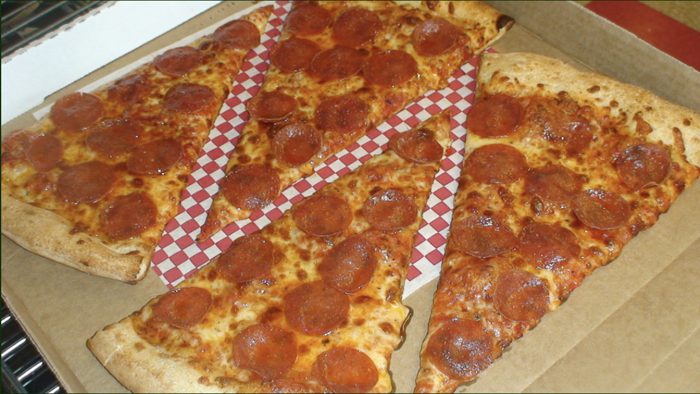

New York Style Pizza

Description
This New York style pizza is the famous real deal with its homemade dough that makes a thin and crispy crust, a
quick homemade tomato sauce, and mozzarella cheese. Toppings optional. Here's how to make it at home.
Ingredients
For the pizza dough
- 16 ounces bread flour, about 3 3/4 cups, plus more for dusting
- 1 tablespoon granulated sugar
- 2 teaspoons kosher salt
- 1/2 teaspoon active dry yeast
- 1 1/4 cups ice water
- 1 tablespoon vegetagble oil, plus more for the work surface and bowl
For the pizza sauce
- 1 (28-ounce) can whole peeled tomatoes, undrained
- 2 medium garlic cloves, minced
- 1 teaspoon kosher salt
- 1 teaspoon dried oregano
- 1/4 teaspoon red pepper flakes, or more, to taste
- 1/2 teaspoon dried basil
- 1/2 teaspoon granulated sugar
For the New York style pizza
- 1/4 cup semolina flour
- All-purpose flour, for dusting
- 8 ounces low-moisture whole-milk mozzarella, or more, shredded
Directions
Pizza dough
- In a large food processor, pulse together the bread flour, sugar salt, and yeast until well combined.
- In a liquid measuring cup, combine the ice water and 1 tablespoon of vegetable oil and, with the machine
running, slowly drizzle the mixture in through the feed tube until a ball of sticky dough forms, 20 to 30
seconds.
- Move to an oiled work surface and knead until smooth, 2 to 4 minutes. Plop into an oiled bowl, cover with
plastic wrap, and refrigerate overnight before using.
Pizza sauce
- In a food processor, combine the tomatoes and their juices, garlic, salt, oregano, red pepper flakes, basil,
and sugar. Process until smooth.
Pizza assembly
- Divide the chilled dough into 2 equal pieces. Wrap individually in plastic wrap and let rest at room
temperature for 1 hour.
- Generously dust a work surface with all-purpose flour and place one piece of the dough on top. Pressing
gently with your fingertips, push the dough out to form an 8-inch (20-cm) round, leaving the edge slightly
thicker.
- Pick up the round of dough and drape it over your knuckles, letting gravity stretch it. Pass the dough hand
over hand until you have about a 14-inch (35-cm) round. Transfer the dough to the prepared pizza peel and
reshape it into a circle, if necessary, leaving the edge slightly thicker.
- Depending on how saucy you like your pizza, ladle 1/2 to 3/4 cup of the pizza sauce onto the dough and
spread until evenly coated, making sure to leave a 1/2-inch (12-mm) border exposed.
- Scatter half the mozzarella over the sauce. Slide the pizza onto the preheated pizza stone and bake until
the crust is well browned and the cheese is bubbling and browned in spots, 10 to 12 minutes.
- Using the pizza peel, move the pie to a large cutting board or pizza pan.
- Repeat with the remaining dough, sauce, and cheese to make a second pizza.
- Slice each pizza into about 8 wedges and devour.